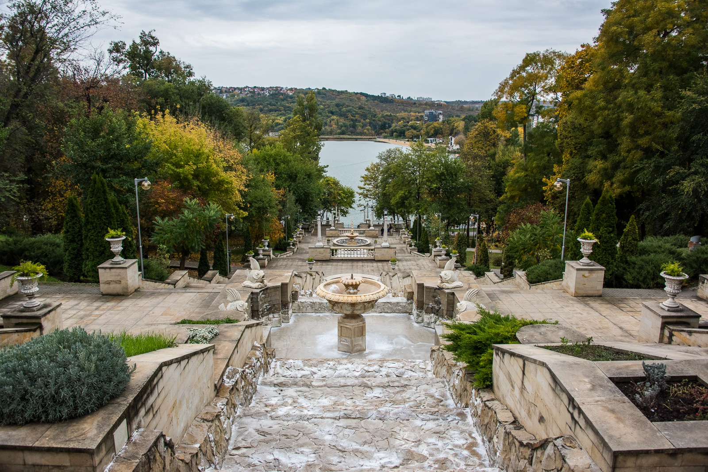
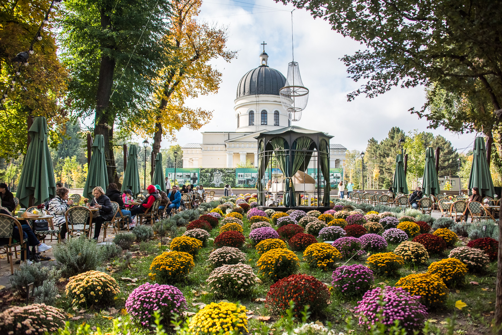
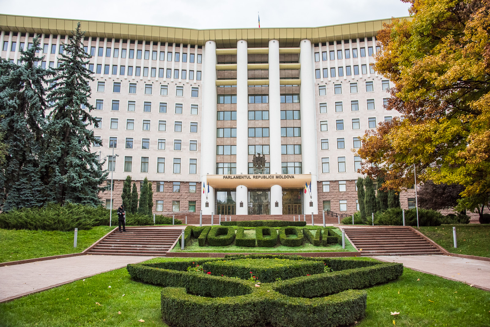
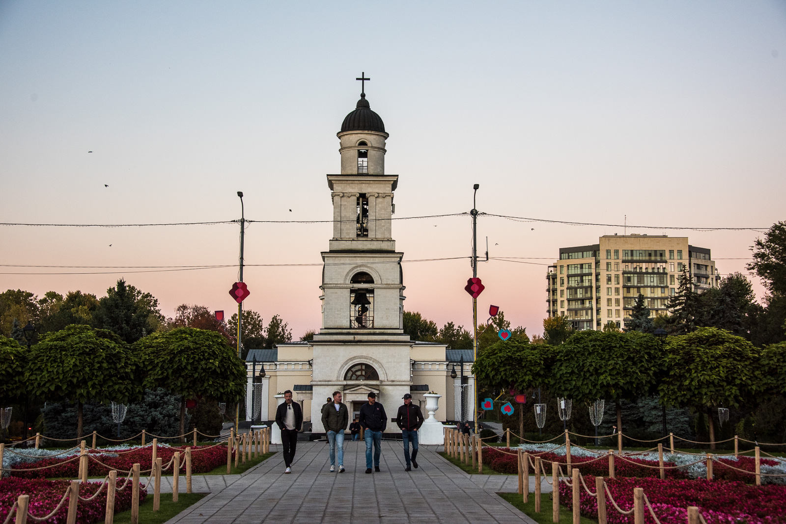
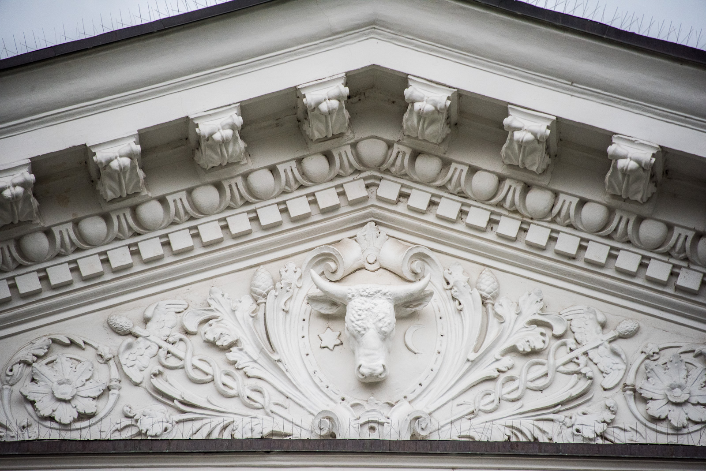
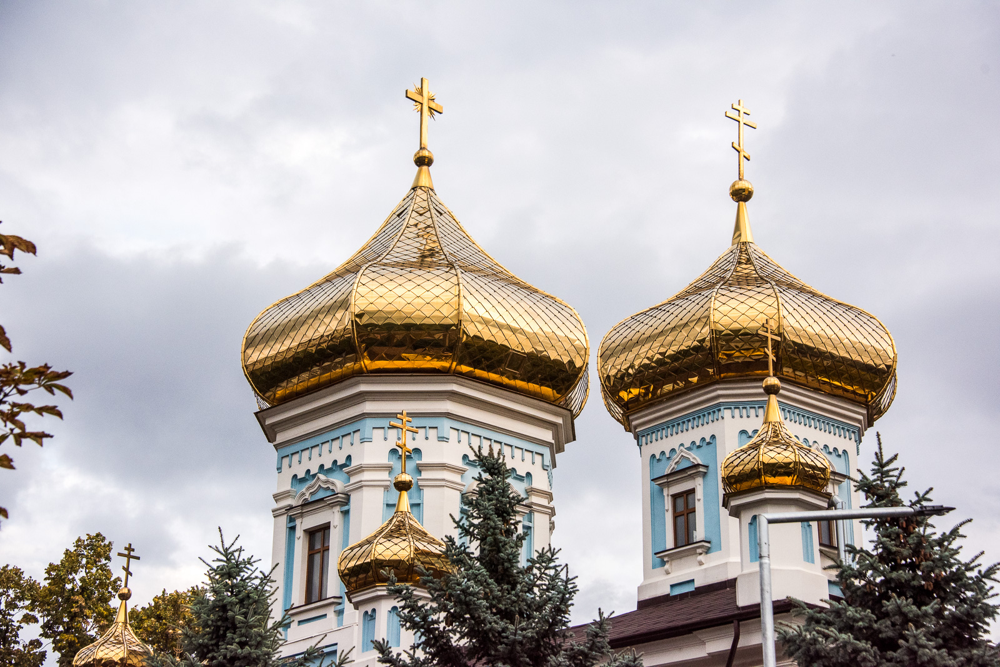
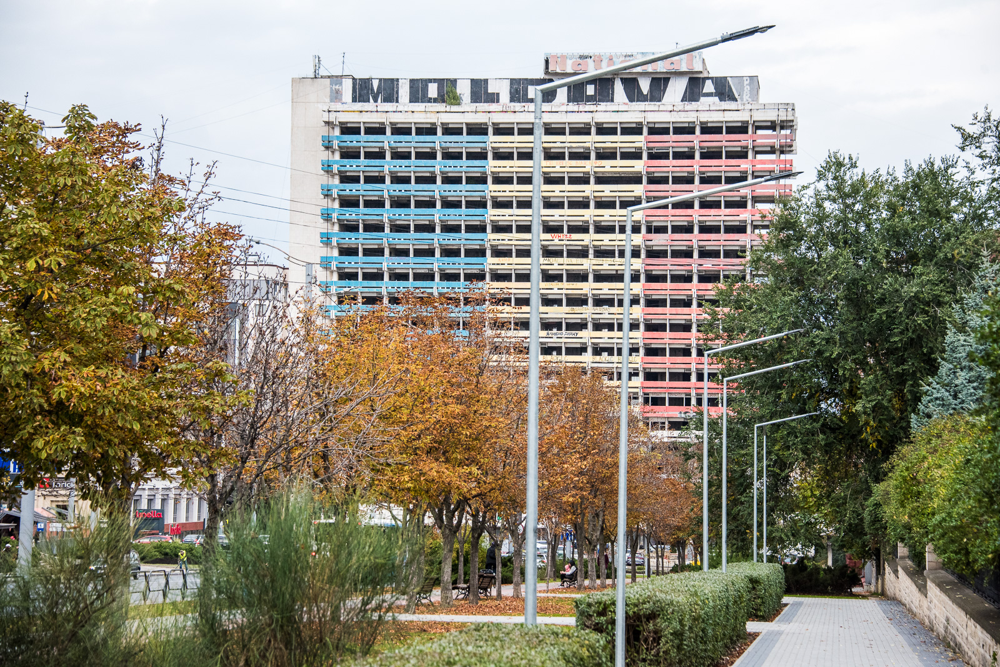
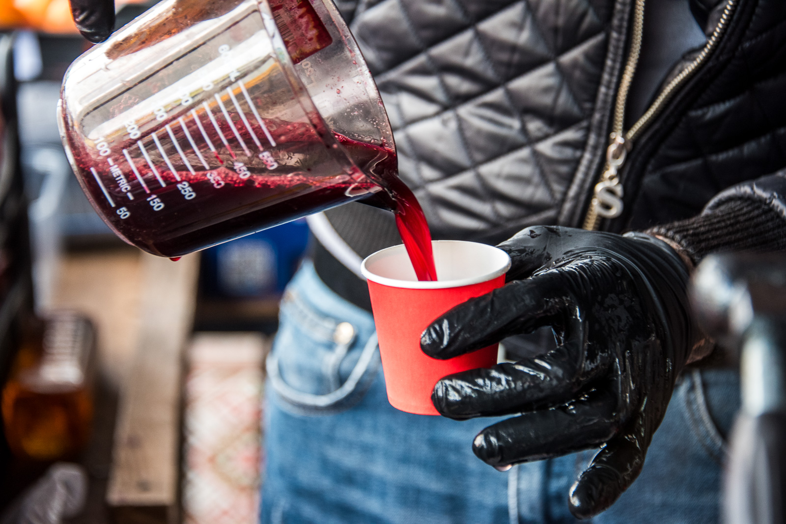
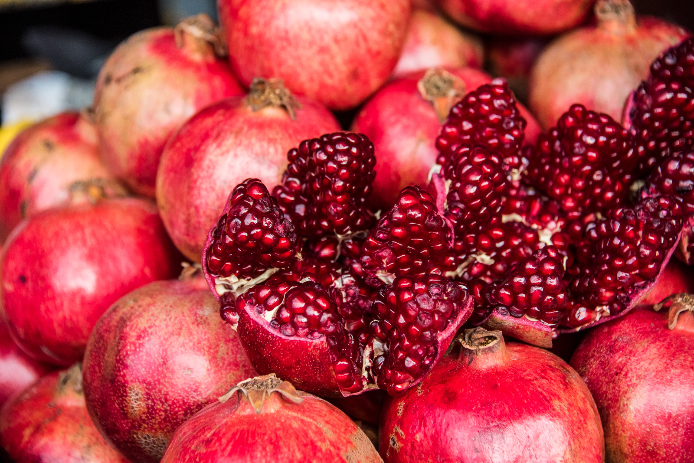

Moldova:
Independent Since 1991, Still Finding Its Feet
The guide is Moldovan, guides in English with what she describes as a mixed-up accent — a result of learning from a teacher with a perfect British accent while also absorbing a great deal of American content. She has been doing this for several years and opens every tour by predicting rain. In autumn Chișinău, she explains, if the forecast says 20% chance of rain, it will rain. A little. But definitely something.
Moldova's history is compressed and complicated. The territory that is now Moldova was, in the medieval period, part of a principality that stretched into what is now Romania. In the 19th century it was annexed by the Russian Empire. After the First World War it briefly reunited with Romania. In the Second World War it became part of the Soviet Union. Independence came in 1991, after the collapse of the USSR, and the country has been navigating its position between East and West ever since.
Moldova applied for EU membership in 2022, alongside Ukraine. The outcome of recent elections has been closely watched — had parties funded by Russian interests won, the guide notes carefully, the trajectory would have been different, and it might have been less straightforward to be standing in central Chișinău as a visitor. The new prime minister, an economist with a background in French institutions, has generated cautious optimism.
The country is small — around 800,000 people in the capital, perhaps three to four million in the country overall. Around 40% of the working-age population has emigrated, mainly to Europe. This is a fact that shapes everything: the economy, the housing market, the schools, the feeling of the city. People keep leaving, and the ones who remain are increasingly aware of it.
Ștefan cel Mare
& Every Banknote in the Country
The tour starts at the monument to Ștefan cel Mare — Stephen the Great — which the guide introduces as the greatest protector of the country, a 15th-century ruler who reportedly built a church or monastery every time he won a war. There are over thirty of these churches and monasteries still standing across Romania and Moldova. He holds a cross in one hand, which the guide explains represents both his Christian faith and his belief that he was defending all of Christian Europe against the Ottoman Empire.

His height, according to historical sources, was approximately the same as the guide's. She is not tall. The statue is enormous. Every denomination of the Moldovan leu has his face on it — the designers apparently could not agree on anyone else. Streets, schools, libraries, the main boulevard of the capital: all named after him. When politicians want to be seen paying their respects, they come here and put flowers down. The guide has been giving tours past this statue for five years. She is, she says, quite ready to move on from it.
The Parliament:
An Open Book & a Revolution
The parliament building was constructed over thirteen years, opening in 1976. Its shape — two wings extending from a central spine — is meant to represent an open book, a symbol of transparency and openness to the people. The guide delivers this information with the dry equanimity of someone who has noted the gap between symbolism and outcome.

In 2009, the Communist Party won parliamentary elections for the third consecutive time. A significant portion of the population believed the result was fraudulent. People came to the streets. Buildings were damaged, including several in the central square. One person died as a result of police brutality during the protests.
Every year on 7 April, Moldovans commemorate the events of that day. The protests were a turning point — not immediately decisive, but part of a longer process of political change that eventually resulted in the country's current pro-European orientation. The buildings have since been repaired. The square outside the parliament is both a protest venue and, when things are going well, a party space: wine day in October, concerts, marathons.
Across the street from the parliament is the presidency — where the staff of the president work. Since 2020, Moldova has had its first female president, Maia Sandu. She opened the gate of the presidential compound to the public, something her predecessors had not done. In 2024 she was re-elected for a second term. The guide notes this without particular editorial comment, though the context — an election whose outcome significantly affected Moldova's European future — makes the sentence heavier than it sounds.
The Victory Arch &
The Year Someone Erased
The arch at the edge of the central square was originally called the Holy Gate — it stood in front of the cathedral, and the name reflected its position as the ceremonial entrance to the religious centre of the city. After the Soviet occupation, the arch was rededicated as the Victory Arch, and the year of its original construction was erased from the stonework and replaced with a false date. The Soviets, the guide explains, decided to rewrite history and put in a fake number.

If you want to find the real year of construction, you can go and look — the original date is still faintly legible underneath the replacement, if you know where to look. The arch's clock still chimes, and still surprises the guide every time she walks past it at six in the morning.
The cathedral and its bell tower are visible from the square. The bell tower stands separately from the cathedral — structurally independent, because the weight and vibration of the bells were considered a risk to the main building. The arrangement is more common than it might appear; the same logic applies to the detached bell tower of Bordeaux's cathedral, for identical reasons.
Maria Bieșu &
The Soprano Who Won Japan
The National Opera and Ballet is one of the few buildings in central Chișinău that the guide describes as having a genuinely strong influence of brutalist architecture — its massive columns visible from what she claims is approximately space. The institution was opened in 1957 and has run continuously since, employing over 200 people.

The building is named after Maria Bieșu, a mezzo-soprano who was, in the 1960s and 1970s, approximately the Madonna of Eastern European classical music. She competed in Japan and won a title — Sosei Star — that nobody in Moldova fully understood but everyone was extremely proud of. She died in 2012. The building was renamed in her honour, and an international festival bearing her name continues annually.
If you don't understand Italian opera — and in Moldova, the guide notes, almost nobody does — you can follow subtitles on a screen and understand that something is being performed. The performances are in the original language. Tickets are affordable. The guide recommends it if you are in the city for more than a day.
Pushkin in Exile &
The Netflix of the 19th Century
The path leading to the Pushkin monument is the Alley of Classicists — twenty-eight monuments to famous people who contributed to art, history, literature, politics and diplomacy, mainly Romanian and Moldovan figures. On birthdays and memorial days, flowers appear at the relevant statues. The guide considers the Alley the Netflix of the 19th century: you paid a subscription to have cultural figures present in your public space, and on significant days, people came to engage with them.

Alexander Pushkin — the Russian poet — arrived in Chișinău not because he wanted to, but because the Russian imperial government found him inconvenient. He was 19, famously attractive according to the history books, and writing things that made authorities uncomfortable. Rather than Siberia, they sent him to Moldova, where Russian aristocrats had villas and where the climate was thought, perhaps incorrectly, to be less damaging to his constitution.
He did not enjoy Chișinău initially, which the guide finds entirely understandable. But then he travelled across the country, fell in love with the landscape, and wrote poems about it. Children in Moldova learn these poems in school and generally find them useless. The guide is doing the tours now. She supposes it all worked out.
Chișinău was the second city after Moscow to have a dedicated Pushkin monument. Every year on his birthday or memorial day, people come and leave flowers — or, for reasons the guide has never fully been able to explain, apples.
The Language That Isn't
A Separate Language
The language spoken in Moldova is Romanian. This is a fact that is, in Moldovan politics, contested — or rather, artificially contested, as the guide frames it. The question of whether Moldovans speak Romanian or a separate Moldovan language is less a linguistic question than a political one, created to divide the population and sustained by those who benefit from the division.

"It's a sensitive thing. Not necessarily sensitive, but we're very conscious of what the French language has in terms of baggage. And we're intentionally replacing French with English. It's a process, and we're doing good."
— The guide, on language in Moldova
Schools teach in Romanian. The first foreign language taught is now English — French held that position until the 1990s and is still spoken by older generations in the cities, but the shift has been deliberate and largely complete at the higher education level. Romanian is closely related to Italian — close enough that Italians visiting Moldova often find they can read signs and broadly follow conversations. Romanians can learn Italian in approximately two to three months. It is, linguistically, closer to Latin than any other living language.
The Valley of the Mills
& 200 Stairs
The Valley of the Mills park — built in the Soviet period as a recreational space, with an artificial lake at its centre — is the guide's favourite part of the tour and the one she is most prepared to skip if the group is visibly tired, given the 200 stairs required to get back up. She negotiates this openly with the group before committing to the descent.

The lake is artificial, constructed in the 1950s. The national canoe team trains here. The Little Prince — the smallest monument in Chișinău, approximately the size of the guide's fist — is somewhere on the far side of the park; she marks it on the map so people can find it themselves. The Lenin monument, if anyone is looking for it, is also in this area, somewhat hidden in the greenery.
The park is at its best in October, when the trees are in full colour. The guide has been wanting to bring a tour here in autumn specifically because the colours are, she says, quite something. The stairs back up are 200 in number, which she has counted. Coming down is easy. Coming back is a challenge.
The building visible beyond the trees — the Academy of Art — is one of the access points to the park. The Tower of Water, nearby, was the city's original water supply infrastructure and now houses a photography museum and an observation platform with views over the old city centre that make the 200 stairs feel, retrospectively, worthwhile.
What to Eat, Drink
& Where to Go
The guide ends the tour at the Organ Hall — the National Bank of Moldova's former building, now a concert venue with an organ containing over 4,000 pipes, one of the more affordable places in Europe to hear live classical music. She distributes a list of recommendations.

La Placinte: The chain restaurant she keeps returning to — chicken pie with mashed potato, desserts, traditional Moldovan food done consistently. Not fancy. Reliably good.
Moldovan wine: The thing to try, and the thing most visitors leave wishing they had explored more. Flintwine bar in the city centre — wine by the glass or bottle, starting with a glass and moving to a bottle being the guide's recommended strategy.
Hârtopul cake: A cherry cake that appears in season and is worth finding. Only in Moldova, and in some parts of Romania.
The circus on Ștefan cel Mare Street — yes, an actual circus — is apparently worth a visit, though the guide notes she has not been herself and recommends checking what's on before going.